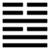

Lôi Trạch Quy Muội (歸妹 guī mèi)
Đã tiến lên thì phải tới, về một nơi nào đó (nơi đó là mục đích); cho nên sau quẻ Tiệm tới quẻ Qui muội. Qui là về, muội là em gái; qui muội là em gái về nhà chồng.
Thoán từ:
歸妹: 征凶, 无 攸利．
Qui muội: chinh hung, vô du lợi.
Dịch: Con gái nhỏ về nhà chồng, tiến lên thì xấu, không có gì lợi cả.
Giảng: Nội quái là Đoài (con gái nhỏ), ngoại quái là Chấn (con trai lớn); chấn lại có nghĩa là động, Đoài có nghĩa là vui vẻ, thuận theo; con gái nhỏ về với trưởng nam, cho nên gọi là qui muội.
Trai gái phối hợp nhau vốn là “cái nghĩa lớn của trời đất” vì có vợ chồng rồi mới có gia đình, xã hội. Vậy mà Thoán từ bảo là xấu, vì lẽ:
- Cặp trai gái này không xứng nhau: trai lớn quá (trưởng nam) gái nhỏ quá (muội).
- Tình của họ không chính đáng: gái chỉ vì vui (hoà duyệt, đức của nội quái Ðoài) mà tự động (Chấn) theo trai; cũng có thể giảng là vì gái cầu trai mà trai đã bị động theo gái; như vậy là bất chính. Sự bất chính đó còn thấy trên bốn hào ở giữa nữa; không một hào nào ở vị chính đáng.
- Lại thêm hào 3 và 5 đều là âm mà cưỡi lên dương: 4 và 2 có cái tượng vợ ăn hiếp chồng.
Ngay từ buổi đầu, sự phối hợp đó không được chính đáng thì biết trước được về sau không có gì lợi, chỉ tệ hại thôi (Lời Đại Tượng truyện).
Ý nghĩa các hào:
1.
初九: 歸妹以娣, 跛能履, 征吉．
Sơ cửu: Qui muội dĩ qui đệ, bả năng lý, chinh cát.
Dịch: Hào 1, dương: Em gái về nhà chồng làm vợ bé, chân thọt mà đi được, tiến đi thì tốt.
Giảng: Ý nghĩa chung của quẻ là xấu, nhưng mỗi hào xấu hay tốt tùy hoàn cảnh. Như hào này dương cương ở vị thấp nhất, không có chính ứng ở trên, nên ví với người con gái nhỏ có đức, nhưng không được làm vợ cả (không có chính ứng; hào 4 cũng là dương), chỉ làm vợ bé thôi, giúp đỡ vợ cả. Vì làm vợ bé, nên bảo là chân thọt, vì giỏi giúp việc nên bảo là đi được. Cứ tiến đi siêng năng giúp việc thì tốt.
Thời xưa các vua chúa cưới một người vợ chính thì có năm ba em gái hay cháu gái cô dâu đi phù dâu rồi ở luôn bên nhà trai, gọi là “đệ” như vợ bé.
2.
九二: 眇能視, 利幽人之貞．
Cửu nhị: Diểu (miểu) năng thị, lợi u nhân chi trinh.
Dịch: Hào 2, dương: chột mà thấy được âm thầm giữ đức trinh chính thì tốt.
Giảng: Hào này dương cương đắc trung, là người con gái hiền, trinh; nhưng chính ứng với hào 5 âm nhu, bất chính, tức như gặp người chồng dở, không dựng nổi cơ đồ, nên ví với người chột mắt. Cứ âm thầm giữ đức trung của mình thì tốt. Đây là hoàn cảnh một người không gặp thời.
3.
六三: 歸妹以須, 反歸以娣．
Lục tam: qui muội dĩ tu, phản qui dĩ đệ.
Dịch: Hào 3, âm: Em gái về nhà chồng, chờ đợi mãi, nóng lòng trở về làm vợ bé.
Giảng: Hào này ở trên cùng nội quái, có địa vị, đáng lẽ không phải làm vợ bé. Nhưng vì là âm nhu, bất trung bất chính, mà lại đa tình (ham vui là tính cách của nội quái đoài) tính nết như thế nên ế chồng, chờ đợi mãi không ai chịu lấy, đành phải trở về làm vợ bé vậy. Kẻ ham công danh, phú quí, cầu cạnh người, kết quả bị người khinh, coi như tôi tớ, cũng giống cô gái trong hào này.
4.
九四: 歸妹, 愆期, 遲歸, 有時．
Cửu tứ: Qui muội, khiên kì, trì qui, hữu thời.
Dịch: Hào 4, dương: em gái về nhà chồng, lỡ thời; nhưng dù chậm gả ít lâu, rồi cũng sẽ có lúc gặp đựơc chồng tốt..
Giảng: Hào này dương cương, ở ngoại quái là người con gái đã hiền lại sang, nhưng không có hào chính ứng với nó (vì 1 cũng là dương), nên lỡ thời, không sao, cứ đợi giá cao, chậm trễ ít lâu rồi sẽ gặp duyên lành.
5.
六五: 帝乙歸妹, 其君之袂, 不如其娣之袂良, 月幾望, 吉．
Lục ngũ: Đế Ất qui muội, kì quân chi duệ, bất như kì đệ chi duệ lương, nguyệt cơ vọng, cát.
Dịch: Hào 5, âm: Vua Đế Ất (nhà Thương) cho em gái về nhà chồng, tay áo của công chúa (cô dâu) không đẹp bằng tay áo của cô phù dâu (vợ bé); như trăng đêm muời bốn (sắp đến rằm) tốt.
Giảng: Hào này âm nhu đắc trung, ở địa vị cao quí mà lại chính ứng với hào 2 dương, địa vị thấp, như nàng công chúa em vua Ðế Ất mà hạ giá với bình dân. Đã vậy mà khi rước dâu, y phục của nàng lại không đẹp bằng y phục mấy cô phù dâu (vợ bé). Như vậy là đức hạnh rất cao, không hợm mình địa vị cao quí, lại coi thường phục sức. Đức như vậy thật đẹp, như trăng mười bốn (trăng mười bốn tròn, đẹp mà chưa đầy hẳn; chưa đầy hẳn có nghĩa là Khiêm hư).
6.
上六: 女承筐, 无實．士刲羊, 无血, 无攸利．
Thượng lục: Nữ thừa khuông,vô thực.
Sĩ khuê dương, vô huyết, vô du lợi.
Dịch: Hào trên cùng, âm: (Để cúng tổ tiên) người con gái (vợ) xách giỏ mà giỏ không có đồ cúng, người con trai (chồng) cắt cổ con cừu để lấy huyết mà (cắt giả vờ) không có huyết, không có gì lợi cả.
Giảng: Năm hào trên, các cô em gái đều về nhà chồng cả rồi, hào này là hào trên cùng, muộn nhất, mà lại không có chính ứng ( hào 3 ứng với nó cũng là âm), không thành vợ chồng chính thức được, chỉ sống bậy bạ với nhau, không có gì lợi cả.
Hồi xưa, khi cúng tổ tiên, bổn phận của vợ là dâng đồ cúng, của chồng là dâng huyết cừu; người con gái trong hào này xách giỏ dâng đồ cúng mà giỏ lại trống không, còn người con trai cắt cổ cừu để lấy huyết thì lại cắt giả vờ, không có huyết; như vậy thì tổ tiên nào chứng giám, trai gái không thành vợ chồng chính thức được. Vì hữu danh mà vô thực.